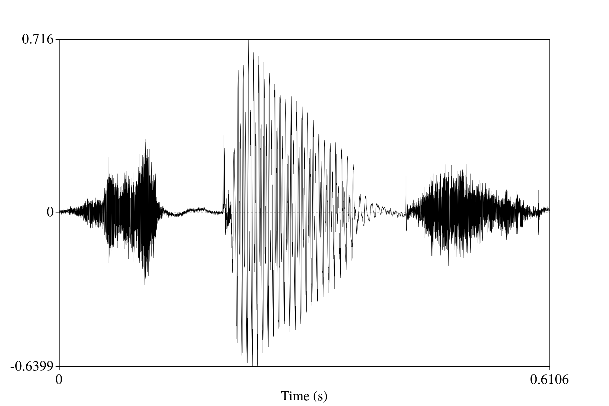
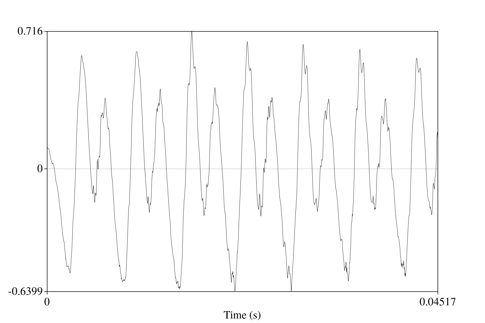
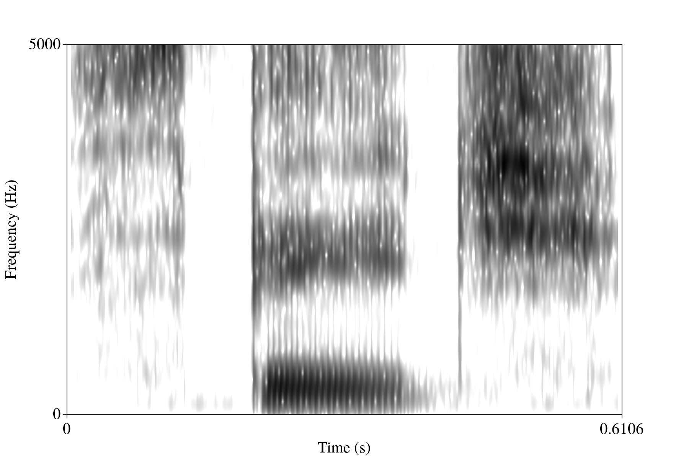
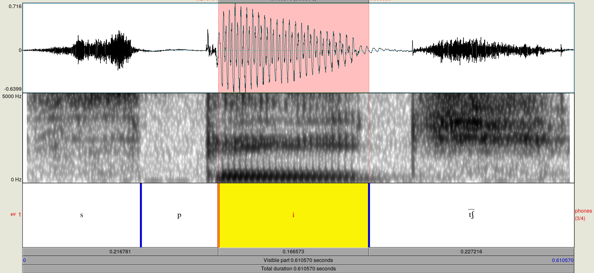

"The acoustics of speech"
In the last post, we discussed the articulatory aspects of speech. This post will build on that one and discuss the acoustic aspects of speech.
The acoustic aspects of speech
When speaking, a sound wave is produced. This is the air stream that is produced and modulated during the process of articulating phones. Because it is a sound wave, we can analyze it acoustically. Let's start by returning to the glottis and vocal folds. The vocal folds can open and close. When the vocal folds are open while air is passing throug them, the air passes through in what is an essentially random manner that would be perceived as noise if other articulators didn't modulate the stream (think about breathing onto your hands to warm them up). When the folds are nearly closed, they vibrate in a cyclic way, which causes the air stream to move in a cyclic way, sounding like a buzz or hum if unmodulated (think of saying "uhhhhh..." in a mindless way). The effect of these two positions on the air stream forms the acoustic basis for the voiced/voiceless dimension of articulation. Additionally, the faster the vocal folds vibrate, the higher the pitch of the resultant acoustic signal. This information is contained in the lower frequency ranges of the sounds humans produce, and it is part of what constitutes tone in tonal languages like Mandarin, Yoruba, and Zapotecan languages.
As the air stream passes through the rest of the vocal tract, the shape of the tubes it passes through (the rest of the trachea, the mouth, and, potentially, the nasal cavity) help to modulate the air stream. The result of the rest of the air stream's journey is that it adds higher-frequency energy to the air stream, which is used to distinguish between phones when listening to speech. Based on the resonant frequencies of the speaker's vocal tract, certain frequency bands will be more intense than others. These bands are called formants, and they are the primary cues for distinguishing vowel identity in speech, and they are also used in the process of identifying stops (e.g., [b] vs. [d]). Multiple models have been proposed to predict aspects of this process. Johnson (2012) discusses the source-filter theory, tube models, and perturbation theory, if you are interested in learning more about how mainpulations of the physical shape of the vocal tract can affect the acoustic signal.
After the air stream leaves the body, it is a complex wave. That is, to define it with mathematical functions would require the composition of multiple sinusoids. The wave is longitudinal, so the energy in the wave is transfered by a series of air particles smacking into each other. Wikipedia's page on longitudinal waves (Wikipedia contributors, 2018) has an illustration of what this kind of wave looks like.
The instruments we use to measure and record sound events rely on the way the wave propagates through the air in this successive smacking manner. Both the microphone and the eardrum are sensitive to how intensely their sensors are depressed, which produces an amplitude measure. Over time, what results is a series of amplitude measures over time. The eardrum's are more or less continuous, but a digital microphone's measurements will be discrete and spaced out depending on the sampling rate (how often it takes measurements from its sensor). We can't easily take the same measurements as our eardrum, but we do have easy access to what a microphone's measurements are. When visualized, these measurements of intensity produce the waveform of audio that you have probably seen before. An example of this can be seen in figures 2 and 3. In figure 3, I've zoomed in far enough that you can see the cycles of the [i] vowel I produced. The x-axes are time, and the y-axes are intensity measure.
 Figure 2: Waveform of a recording of me saying "speech."
 Figure 3: Zoomed-in slice of waveform for the [i] in the recording of "speech."
This is all fine and dandy, and if you were to play this back based on just the intensity measure, you would end up with essentially the same signal. However, we know that humans do not use this intensity information directly. Rather, the cilia in the ear beyond the ear drum are sensitive to certain frequency information and ultimately end up passing frequency information on to the cochlea before the information is processed and understood. That is to say that the acoustic information that's matched to meaning in the mind is both a time and frequency domain, and not merely just the intensity values. And, indeed, it is easier to distinguish between phones when looking at a time-frequency representation, at least analytically. I provide such an example below in figure 4. The x-axis is time, the y-axis is frequency, and the darker a region is, the more energy there is at that frequency.
 Figure 4: Waveform of a recording of me saying "speech."
Using a combination of primarily the spectrogram, and secondarily the waveform, a researcher can determine where the approximate boundaries are between the phones in the recording. (Recall that the signal is continuous, and placing discrete labels on it will thus be an approximate process). I have annotated my recording of "speech" in Figure 5 to show what this looks like.
 Figure 5: Annotated spectrogram and waveform of me saying "speech."
This barely scratches the surface of acoustic approaches to speech data, but I hope that it will suffice to give you a sense of what kind of data is being fed into the neural network. If you are interested in learning more, Johnson's (2012) Acoustic and auditory phonetics is a great resource. Additionally, if you would like to explore speech data and be able to visualize it with relative ease, the Praat program (Boersma & Weenik, 2018) is freely available for a variety of computer platforms. It is the program I used to produce the waveform, spectrogram, and annotation I provided here, and it is widely used across phonetics, phonology, and speech science.
Conclusion
In this post, I discussed the acoustic aspects of speech. You should come away from it with a basic understanding of what is at stake in the acoustic signal. This is essential since automatic speech recognition works to understand the segments that I've discussed here. In the next post, I'll discuss speech features and automatic speech recognition.
References
Boersma, P., & Weenik, D. Praat, version 6.0.40 [software program]. Available at http://praat.org.
Johnson, K. (2012). Acoustic and auditory phonetics. Malden: Wiley-Blackwell.
Wikipedia contributors. (2018). Longitudinal wave. In Wikipedia, the free encyclopedia. Retrieved May 26, 2018, from https://en.wikipedia.org/w/index.php?title=Longitudinal_wave&oldid=842176163